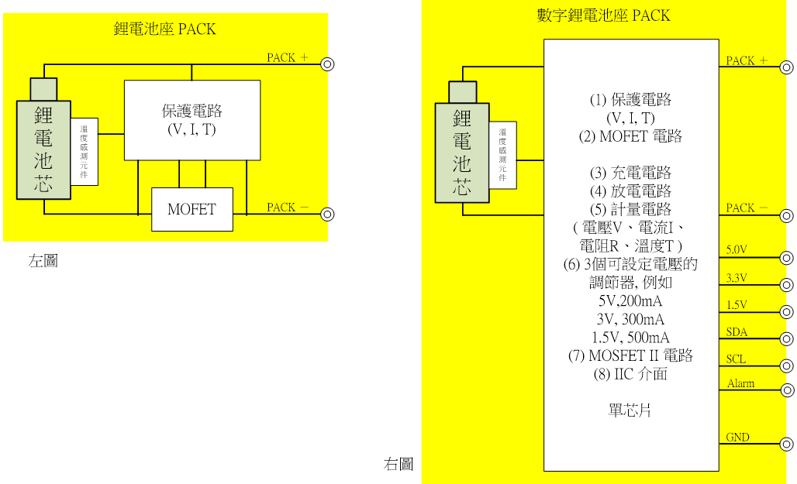

數字鋰電池座
50W以下單節鋰電池解決方案，應用於可攜式產品之電源
產品說明
傳統 鋰電池座 包含1個電池芯、1個保護電路芯片、一組MOSFET開關電路、1個溫度感測元件。如下左圖,
而 數字鋰電池座 如上右圖, 將(1)保護電路, (2) 一組MOSFET開關電路, 和BMS系統芯片整合為一單芯片。 而此BMS系統芯片共包括 : (3) 充電電路(Charger), (4) 放電電路(DisCharger) ,(5) 計量(Gauge)電路, 可計量電池芯的電壓、電流、電阻、溫度信號, (6) 3個可設定電壓的調節器(Regulators), (7)多一組MOSFET開關電路及(8) IIC介面。
APP透過取得電池芯的電壓、電流、電阻、溫度數字等數據, APP可提供電池芯的 (1) 電量Q及電流I, (2) 安全 (V, I, T) 信息, (3) 電池的材料品質、健康度, (4) 電池的工藝品質、健康度, (5) 已用次數及尚可用次數(壽命), 等信息，並可設定APP功能來智能化管理及優化鋰電池(芯)。
透過3個可設定電壓的調節器(Regulators), 此 數字鋰電池座 可提供“手攜式產品”及“可移動式產品”的各種電源需要。
應用領域
1.5V電池系列
C、D、AA、N、AAA、AAAA型號電池，可充電及顯示電量，長效耐用
鋰電池電源方案
可整合於各種便攜設備，提供USB充放電及鋰電池保護
電池包
便攜式電源管理解決方案，提供5V/3V/1.5V標準電壓，USB充放電
鋰電池電源管理芯片
提供SAmPG1(100~500mAh)、SAmPG2(10~50mAh)、SPG(1Ah~3Ah)等不同容量的鋰電池電源管理方案